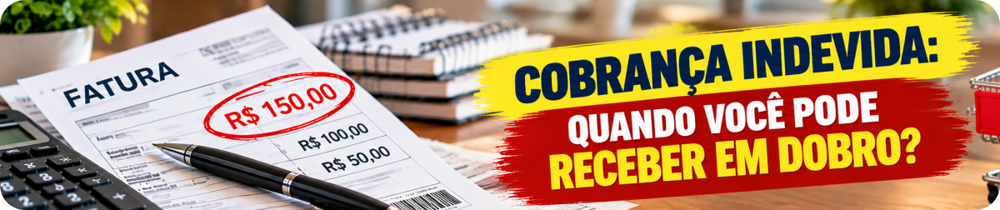
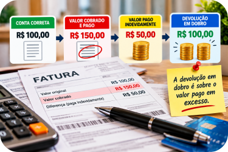
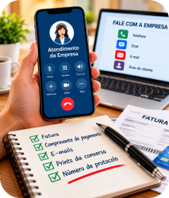

Você abre a fatura e encontra uma cobrança que não reconhece. Ou percebe que pagou por um serviço que já havia cancelado. Talvez uma conta tenha vindo com um valor maior do que deveria.
Nessas situações, é comum ouvir: “Se cobraram errado, têm que devolver em dobro!”
O Código de Defesa do Consumidor realmente prevê a devolução em dobro em determinadas situações. Mas existe uma diferença importante entre simplesmente receber uma cobrança errada e efetivamente pagar um valor que não era devido.
Entender essa diferença ajuda o consumidor a reconhecer seus direitos e a saber como agir.
1. Cobrança indevida e pagamento indevido não são a mesma coisa
Esse é o primeiro ponto — e provavelmente o mais importante.
Imagine que uma conta deveria ser de R$ 100,00, mas chegou cobrando R$ 150,00.
Se você percebe o erro antes de pagar e procura a empresa para corrigir a cobrança, existe uma cobrança indevida. Porém, como os R$ 50,00 extras ainda não foram pagos, não existe naquele momento um valor pago em excesso para ser devolvido em dobro.
Agora imagine que você pagou os R$ 150,00 e só depois descobriu que deveria ter pago apenas R$ 100,00.
Nesse caso, houve R$ 50,00 pagos indevidamente.
Atenção: o art. 42, parágrafo único, do Código de Defesa do Consumidor trata do valor que o consumidor efetivamente pagou em excesso. A lei prevê a restituição em dobro desse valor, acrescida de correção monetária e juros legais, salvo hipótese de engano justificável.

2. Como funciona a devolução em dobro?
Vamos continuar com o mesmo exemplo.
A conta correta era de R$ 100,00, mas foram cobrados e pagos R$ 150,00.
O valor pago indevidamente foi, portanto, de R$ 50,00.
Se estiverem presentes os requisitos para a restituição em dobro, é esse valor pago em excesso que será considerado.
Assim, os R$ 50,00 pagos indevidamente correspondem a uma restituição de R$ 100,00, além da correção monetária e dos juros legais previstos pelo CDC.
Entenda a conta
Usando um exemplo simples:
3. Toda cobrança indevida paga gera automaticamente devolução em dobro?
Não é correto afirmar que qualquer cobrança errada gera automaticamente a devolução em dobro.
O próprio Código de Defesa do Consumidor estabelece uma exceção: a hipótese de engano justificável.
Isso significa que as circunstâncias que provocaram a cobrança precisam ser consideradas.
Também houve durante muitos anos discussão nos tribunais sobre a necessidade de o consumidor provar que a empresa agiu de má-fé.
O Superior Tribunal de Justiça consolidou o entendimento de que a repetição em dobro prevista no art. 42 do CDC não depende da demonstração de dolo ou má-fé do fornecedor.
A análise considera a boa-fé objetiva e a existência ou não de engano justificável.
Em linguagem simples: não é correto dizer que o consumidor só pode receber em dobro se conseguir provar que a empresa tentou enganá-lo de propósito.
Existem, porém, particularidades jurídicas na aplicação desse entendimento, inclusive relacionadas à data da cobrança em determinadas relações contratuais. Casos antigos ou situações específicas podem exigir análise individual.

4. O que fazer quando encontrar uma cobrança indevida?
Primeiro, confira cuidadosamente a origem da cobrança. Veja a fatura, o contrato, os serviços contratados e os pagamentos anteriores.
Depois, entre em contato com a empresa pelos canais oficiais, informe o problema e peça esclarecimentos.
Se o valor ainda não foi pago, solicite a correção da cobrança.
Se você já pagou, informe isso expressamente e peça a restituição do valor indevido.
Anote sempre o número do protocolo de atendimento.
5. Guarde as provas
Mesmo quando a empresa promete resolver rapidamente, não descarte os documentos relacionados ao problema.
Guarde a fatura, boleto ou conta que contém a cobrança, o comprovante de pagamento, contrato, e-mails, mensagens, prints das conversas e os números dos protocolos de atendimento.
Esses registros ajudam a demonstrar o que foi cobrado, o que foi pago e quais providências você tentou tomar para resolver o problema.
Se a questão não for solucionada diretamente com o fornecedor, essa documentação poderá ser importante em uma reclamação perante os órgãos de defesa do consumidor ou em eventual medida judicial.
6. Um exemplo bem comum
Imagine uma assinatura que custe R$ 50,00 por mês.
Você cancela corretamente o serviço, mas no mês seguinte a empresa realiza outra cobrança de R$ 50,00 e o valor é efetivamente pago.
Não basta simplesmente concluir: “Então a empresa me deve R$ 100,00.”
Primeiro é necessário verificar se a cobrança realmente era indevida, se houve pagamento e as circunstâncias que deram origem ao erro.
Estando presentes os pressupostos para aplicação do art. 42 do CDC, a restituição em dobro incide sobre aquilo que foi pago indevidamente, observada a exceção legal do engano justificável.
7. E se a empresa não resolver?
Se o contato direto com o fornecedor não solucionar o problema, o consumidor pode procurar os órgãos de defesa do consumidor, como o Procon.
Também existe a plataforma pública Consumidor.gov.br, mantida pelo Governo Federal, que permite a interlocução direta entre consumidores e empresas participantes para a tentativa de solução de conflitos de consumo.
Dependendo da situação, também é possível buscar orientação jurídica e recorrer ao Poder Judiciário.
Por isso, guardar os documentos e protocolos desde o início pode fazer bastante diferença.
8. E se eu realmente estiver devendo?
Ter uma dívida verdadeira não significa perder os seus direitos como consumidor.
O próprio art. 42 do Código de Defesa do Consumidor determina que, na cobrança de débitos, o consumidor inadimplente não pode ser exposto ao ridículo nem submetido a qualquer tipo de constrangimento ou ameaça.
Portanto, são duas questões diferentes: uma empresa pode cobrar uma dívida legítima, mas a forma utilizada para realizar essa cobrança também deve respeitar a legislação.
Dica da Lu: não jogue fora comprovantes só porque o valor parece pequeno. Algumas cobranças passam despercebidas durante meses. Confira periodicamente suas faturas de cartão, telefone, internet, seguros e assinaturas. E, sempre que reclamar, anote o protocolo.
Checklist da Lu
☑ Confira se a cobrança realmente é indevida
☑ Verifique se o valor chegou a ser pago
☑ Guarde a fatura e o comprovante de pagamento
☑ Entre em contato pelos canais oficiais da empresa
☑ Anote o protocolo do atendimento
☑ Peça a correção ou a restituição cabível
☑ Guarde e-mails, mensagens e prints
☑ Se não resolver, procure os canais de defesa do consumidor
Para terminar...
A devolução em dobro é uma proteção importante prevista no Código de Defesa do Consumidor. Mas existe uma diferença fundamental entre receber uma cobrança errada e efetivamente pagar um valor indevido.
O art. 42 trata da restituição em dobro daquilo que foi pago em excesso, acrescido de correção monetária e juros legais, ressalvada a hipótese de engano justificável.
Por isso, ao encontrar uma cobrança que você não reconhece, confira as informações, procure a empresa pelos canais oficiais e guarde todos os documentos e protocolos.
Conhecer seus direitos é importante. Saber documentar o problema também.
Fontes consultadas
Presidência da República — Código de Defesa do Consumidor — Lei nº 8.078/1990, especialmente o art. 42 e seu parágrafo único.
Fundação Procon-SP — orientações e materiais sobre os direitos do consumidor.
Superior Tribunal de Justiça — STJ — jurisprudência sobre repetição em dobro, boa-fé objetiva e aplicação do art. 42 do Código de Defesa do Consumidor.
Consumidor.gov.br — plataforma pública para interlocução direta entre consumidores e empresas participantes.